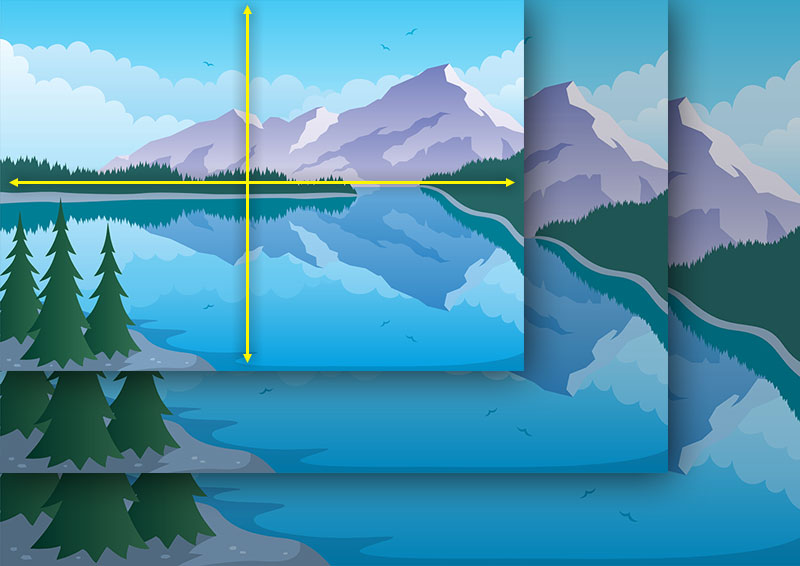

Важная роль «mobile first»

«Mobile First» это методика, призванная создавать сайты изначально для мобильных устройств, так как в 2016 году количество пользователей мобильного интернета превысило количество пользователей настольных компьютеров. Именно по этому зародилась так называема "изящная деградация": от большего разрешения к меньшему.
«Media queries»

«Media queries» - это поддержка различных технических параметров устройств, на основе которых требуется загружать те или иные стили. Все характеристики легко комбинируются, поэтому допустимо задать стиль только для устройств в альбомной ориентации с заданным разрешением экрана. «Media queries» является очень важной дизайнерской частью в "Responsive Web Design"
«Grid-based Layout»
«Grid-based Layout»-методика, применяемая в дизайне при которой страница делится на некоторое количество колонок и каждый элемент дизайна на странице может занимать одну или несколько колонок. Одно из главных применений сетки («Grid-based Layout»)- это стандартизация дизайна для сайта и упрощения разработки сайтов для мобильных устройств. Сетки могут значительно ускорить и улучшить время разработки, так как они могут служить руководством, которое сигнализирует, где лучше всего размещать, позиционировать и масштабировать элементы.
«Flexible images»

«Flexible images» – изображения, которые подстраиваются под текущий размер экрана. Технология основывается на том что размер изображения указывается не в абсолютных величинах (пиксели/сантиметры), а в относительных ( проценты ) так же есть возможность использовать media quaris для указания качества изображений для различных устройств : для мобильных загружать картинки в меньшем размере, а на настольные компьютеры в большем.